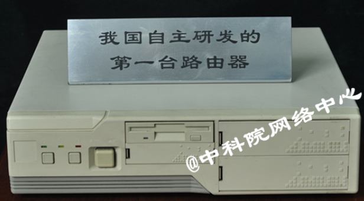

Menu
Search for:
Or search the collection catalog
Timeline of Chinese Computer History
1950s
1970s
1990s
2000s
2010s
2020s
1958
1973
1991
1992
1993
1994
1995
1996
1997
1998
1999
1990
1991
1992
1993
1994
1995
1996
1997
1998
1999
2000
2001
2002
2003
2004
2005
2006
2007
2008
2009
2011
2012
2013
2014
2015
2016
2017
2018
2019

自主研发的路由器
第一台自主研发的路由器
Networking & The Web
1994：中关村地区教育与科研示范网络(NCFC)完成了与Internet的全功能IP连接，从此中国正式被国际上承认是接入Internet的国家。